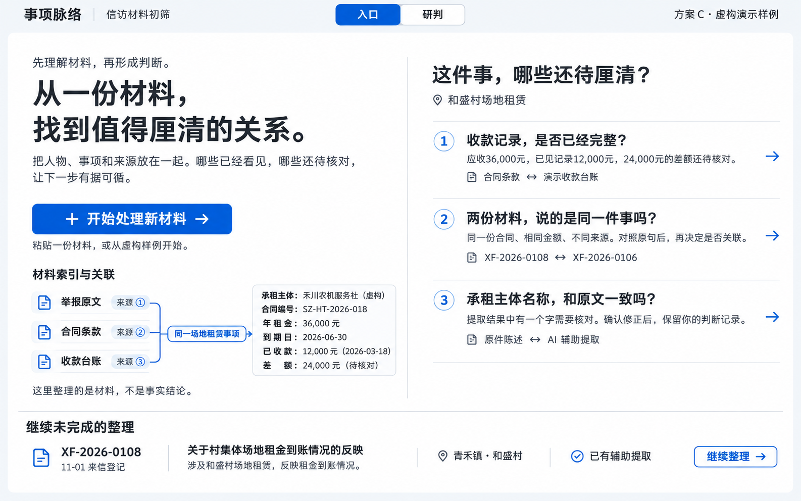

A · 沉浸式材料审阅
原文为中心，提取批注与来源按需出现，修订不改变原件。


B · 数字化案头工作空间
从当前工作稿、上次停点和来件继续工作。笔记可编辑，来源随时展开。


C · 线索与证据探索空间
项目、主体、付款节点与两份材料形成可核对的关系；每条关系都有来源。



全部案例虚构。视觉稿由内置ImageGen独立生成，原生HTML用于清晰中文与交互布局探索；二者不声称逐像素一致。视觉稿不是浏览器截图，原生界面的双尺寸实际截图仍因站点访问权限设置阻止而未完成。原系统、数据与业务逻辑保持不变。阶段 B 视觉探索保留；已选方向的阶段 C 原型见上方入口。